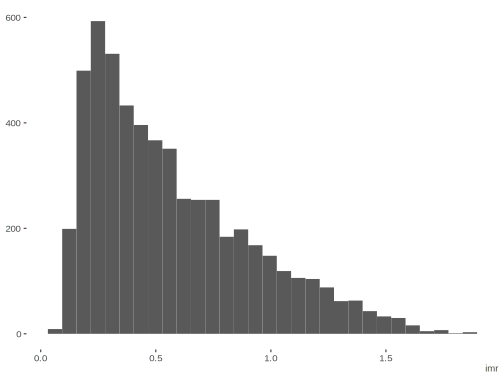

Heckman Selection
This demonstration of the Heckman selection model is based on Bleven’s example here, but which is more or less the ‘classic’ example regarding women’s wages, variations of which you’ll find all over.
Data Setup
Description of the data:
- Draw 10,000 obs at random
- educ uniform over [0,16]
- age uniform over [18,64]
- wearnl = 4.49 + 0.08 * educ + 0.012 * age + ε
Generate missing data for wearnl drawn z from standard normal [0,1]. z is actually never explained in the slides, I think it’s left out on slide 3 and just represents an additional covariate.
- d*=-1.5+0.15*educ+0.01*age+0.15*z+v
- wearnl missing if d*≤0 wearn reported if d*>0
- wearnl_all = wearnl with non-missing obs
library(tidyverse)
set.seed(123456)
N = 10000
educ = sample(1:16, N, replace = T)
age = sample(18:64, N, replace = T)
covmat = matrix(c(.46^2, .25*.46, .25*.46, 1), ncol = 2)
errors = mvtnorm::rmvnorm(N, sigma = covmat)
z = rnorm(N)
e = errors[, 1]
v = errors[, 2]
wearnl = 4.49 + .08 * educ + .012 * age + e
d_star = -1.5 + 0.15 * educ + 0.01 * age + 0.15 * z + v
observed_index = d_star > 0
d = data.frame(wearnl, educ, age, z, observed_index)Examine linear regression approaches if desired.
# lm based on full data
lm_all = lm(wearnl ~ educ + age, data=d)
# lm based on observed data
lm_obs = lm(wearnl ~ educ + age, data=d[observed_index,])
summary(lm_all)
Call:
lm(formula = wearnl ~ educ + age, data = d)
Residuals:
Min 1Q Median 3Q Max
-2.03286 -0.31240 0.00248 0.31578 1.50828
Coefficients:
Estimate Std. Error t value Pr(>|t|)
(Intercept) 4.4691266 0.0171413 260.72 <2e-16 ***
educ 0.0798814 0.0010005 79.84 <2e-16 ***
age 0.0124381 0.0003398 36.60 <2e-16 ***
---
Signif. codes: 0 '***' 0.001 '**' 0.01 '*' 0.05 '.' 0.1 ' ' 1
Residual standard error: 0.4611 on 9997 degrees of freedom
Multiple R-squared: 0.4331, Adjusted R-squared: 0.433
F-statistic: 3820 on 2 and 9997 DF, p-value: < 2.2e-16summary(lm_obs) # smaller coefs, resid standard error
Call:
lm(formula = wearnl ~ educ + age, data = d[observed_index, ])
Residuals:
Min 1Q Median 3Q Max
-1.75741 -0.30289 -0.00133 0.30918 1.50032
Coefficients:
Estimate Std. Error t value Pr(>|t|)
(Intercept) 4.6713823 0.0258865 180.46 <2e-16 ***
educ 0.0705849 0.0014760 47.82 <2e-16 ***
age 0.0114758 0.0004496 25.52 <2e-16 ***
---
Signif. codes: 0 '***' 0.001 '**' 0.01 '*' 0.05 '.' 0.1 ' ' 1
Residual standard error: 0.4507 on 5517 degrees of freedom
Multiple R-squared: 0.3374, Adjusted R-squared: 0.3372
F-statistic: 1405 on 2 and 5517 DF, p-value: < 2.2e-16Two step approach
The two-step approach first conducts a probit model regarding whether the individual is observed or not, in order to calculate the inverse mills ratio, or ‘nonselection hazard’. The second step is a standard linear model.
Step 1: Probit Model
probit = glm(observed_index ~ educ + age + z,
data = d,
family = binomial(link = 'probit'))
summary(probit)
Call:
glm(formula = observed_index ~ educ + age + z, family = binomial(link = "probit"),
data = d)
Deviance Residuals:
Min 1Q Median 3Q Max
-2.4674 -0.9062 0.4628 0.8800 2.2674
Coefficients:
Estimate Std. Error z value Pr(>|z|)
(Intercept) -1.519248 0.052819 -28.763 <2e-16 ***
educ 0.150027 0.003220 46.588 <2e-16 ***
age 0.010072 0.001015 9.926 <2e-16 ***
z 0.159292 0.013889 11.469 <2e-16 ***
---
Signif. codes: 0 '***' 0.001 '**' 0.01 '*' 0.05 '.' 0.1 ' ' 1
(Dispersion parameter for binomial family taken to be 1)
Null deviance: 13755 on 9999 degrees of freedom
Residual deviance: 11119 on 9996 degrees of freedom
AIC: 11127
Number of Fisher Scoring iterations: 4# http://www.stata.com/support/faqs/statistics/inverse-mills-ratio/
probit_lp = predict(probit)
mills0 = dnorm(probit_lp)/pnorm(probit_lp)
summary(mills0) Min. 1st Qu. Median Mean 3rd Qu. Max.
0.07588 0.38632 0.70027 0.75664 1.09246 1.96602 # identical formulation
# probit_lp = -predict(probit)
# imr = dnorm(probit_lp)/(1-pnorm(probit_lp))
imr = mills0[observed_index]
summary(imr) Min. 1st Qu. Median Mean 3rd Qu. Max.
0.07588 0.28739 0.48466 0.57015 0.77617 1.87858 Take a look at the distribution.
ggplot2::qplot(imr, geom = 'histogram')
Step 2: Estimate via Linear Regression
Standard regression model using the inverse mills ratio as covariate
lm_select = lm(wearnl ~ educ + age + imr, data = d[observed_index, ])
summary(lm_select)
Call:
lm(formula = wearnl ~ educ + age + imr, data = d[observed_index,
])
Residuals:
Min 1Q Median 3Q Max
-1.75994 -0.30293 -0.00186 0.31049 1.48179
Coefficients:
Estimate Std. Error t value Pr(>|t|)
(Intercept) 4.5159161 0.1063144 42.477 <2e-16 ***
educ 0.0782580 0.0052989 14.769 <2e-16 ***
age 0.0119700 0.0005564 21.513 <2e-16 ***
imr 0.0955209 0.0633557 1.508 0.132
---
Signif. codes: 0 '***' 0.001 '**' 0.01 '*' 0.05 '.' 0.1 ' ' 1
Residual standard error: 0.4506 on 5516 degrees of freedom
Multiple R-squared: 0.3377, Adjusted R-squared: 0.3373
F-statistic: 937.4 on 3 and 5516 DF, p-value: < 2.2e-16Compare to sampleSelection package.
library(sampleSelection)
selection_2step = selection(observed_index ~ educ + age + z, wearnl ~ educ + age,
method = '2step')
summary(selection_2step)--------------------------------------------
Tobit 2 model (sample selection model)
2-step Heckman / heckit estimation
10000 observations (4480 censored and 5520 observed)
10 free parameters (df = 9991)
Probit selection equation:
Estimate Std. Error t value Pr(>|t|)
(Intercept) -1.519248 0.052725 -28.815 <2e-16 ***
educ 0.150027 0.003221 46.577 <2e-16 ***
age 0.010072 0.001014 9.934 <2e-16 ***
z 0.159292 0.013937 11.430 <2e-16 ***
Outcome equation:
Estimate Std. Error t value Pr(>|t|)
(Intercept) 4.5159161 0.1066914 42.33 <2e-16 ***
educ 0.0782580 0.0053181 14.71 <2e-16 ***
age 0.0119700 0.0005592 21.41 <2e-16 ***
Multiple R-Squared:0.3377, Adjusted R-Squared:0.3373
Error terms:
Estimate Std. Error t value Pr(>|t|)
invMillsRatio 0.09552 0.06354 1.503 0.133
sigma 0.45550 NA NA NA
rho 0.20970 NA NA NA
--------------------------------------------coef(lm_select)['imr'] / summary(lm_select)$sigma # slightly off imr
0.2119813 coef(lm_select)['imr'] / summary(selection_2step)$estimate['sigma', 'Estimate'] imr
0.2097041 Maximum Likelihood
The following likelihood function takes arguments as follows:
- par: the regression coefficients pertaining to the two models, the residual standard error
- sigma and rho for the correlation estimate
- X: observed data model matrix for the linear regression model
- Z: complete data model matrix for the probit model
- y: the target variable
- observed_index: an index denoting whether y is observed
select_ll <- function(par, X, Z, y, observed_index) {
gamma = par[1:4]
lp_probit = Z %*% gamma
beta = par[5:7]
lp_lm = X %*% beta
sigma = par[8]
rho = par[9]
ll = sum(log(1-pnorm(lp_probit[!observed_index]))) +
- log(sigma) +
sum(dnorm(y, mean = lp_lm, sd = sigma, log = TRUE)) +
sum(
pnorm((lp_probit[observed_index] + rho/sigma * (y-lp_lm)) / sqrt(1-rho^2),
log.p = TRUE)
)
-ll
}X = model.matrix(lm_select)
Z = model.matrix(probit)
# initial values
init = c(coef(probit), coef(lm_select)[-4], 1, 0)Estimate via optim. Without bounds for sigma and rho you’ll get warnings, but does fine anyway
fit_unbounded = optim(
init,
select_ll,
X = X[, -4],
Z = Z,
y = wearnl[observed_index],
observed_index = observed_index,
method = 'BFGS',
control = list(maxit = 1000, reltol = 1e-15),
hessian = T
)
fit_bounded = optim(
init,
select_ll,
X = X[, -4],
Z = Z,
y = wearnl[observed_index],
observed_index = observed_index,
method = 'L-BFGS',
lower = c(rep(-Inf, 7), 1e-10,-1),
upper = c(rep(Inf, 8), 1),
control = list(maxit = 1000, factr = 1e-15),
hessian = T
)Comparison
Comparison model.
selection_ml = selection(observed_index ~ educ + age + z, wearnl ~ educ + age,
method = 'ml')
# summary(selection_ml)We now compare the results of the different estimation approaches.
| model | par | sampselpack_ml | unbounded_ml | bounded_ml | explicit_twostep | sampselpack_2step |
|---|---|---|---|---|---|---|
| probit | (Intercept) | -1.52026540 | -1.521 | -1.523 | -1.519 | -1.519 |
| probit | educ | 0.15020205 | 0.150 | 0.150 | 0.150 | 0.150 |
| probit | age | 0.01006608 | 0.010 | 0.010 | 0.010 | 0.010 |
| probit | z | 0.15747033 | 0.158 | 0.158 | 0.159 | 0.159 |
| lm | (Intercept) | 4.47798502 | 4.480 | 4.481 | 4.516 | 4.516 |
| lm | educ | 0.08012367 | 0.080 | 0.080 | 0.078 | 0.078 |
| lm | age | 0.01209129 | 0.012 | 0.012 | 0.012 | 0.012 |
| lm | sigma | 0.45820605 | 0.458 | 0.458 | 0.451 | 0.456 |
| both | rho | 0.25945397 | 0.257 | 0.255 | 0.212 | 0.210 |
| model | par | sampselpack_ml | unbounded_ml | bounded_ml | explicit_twostep | sampselpack_2step |
|---|---|---|---|---|---|---|
| probit | (Intercept) | 0.053 | 0.053 | 0.053 | 0.053 | 0.053 |
| probit | educ | 0.003 | 0.003 | 0.003 | 0.003 | 0.003 |
| probit | age | 0.001 | 0.001 | 0.001 | 0.001 | 0.001 |
| probit | z | 0.014 | 0.014 | 0.014 | 0.014 | 0.014 |
| lm | (Intercept) | 0.090 | 0.090 | 0.090 | 0.106 | 0.107 |
| lm | educ | 0.004 | 0.004 | 0.005 | 0.005 | 0.005 |
| lm | age | 0.001 | 0.001 | 0.001 | 0.001 | 0.001 |
| lm | sigma | 0.008 | 0.008 | 0.008 | NA | NA |
| both | rho | 0.112 | 0.112 | 0.112 | NA | NA |
Source
Original code available at https://github.com/m-clark/Miscellaneous-R-Code/blob/master/ModelFitting/heckman_selection.R